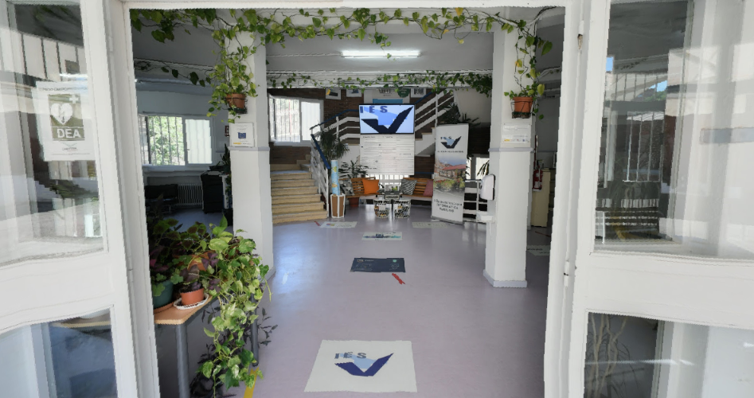
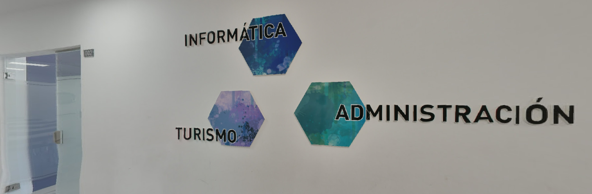
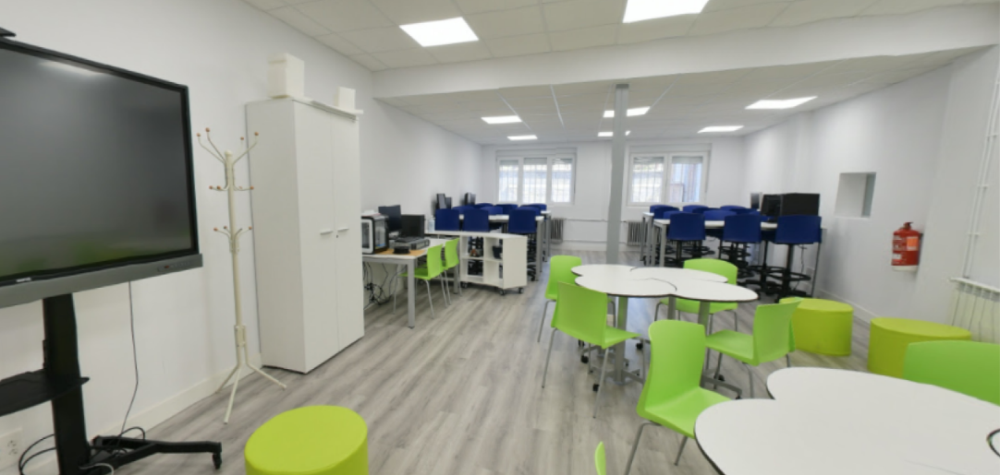
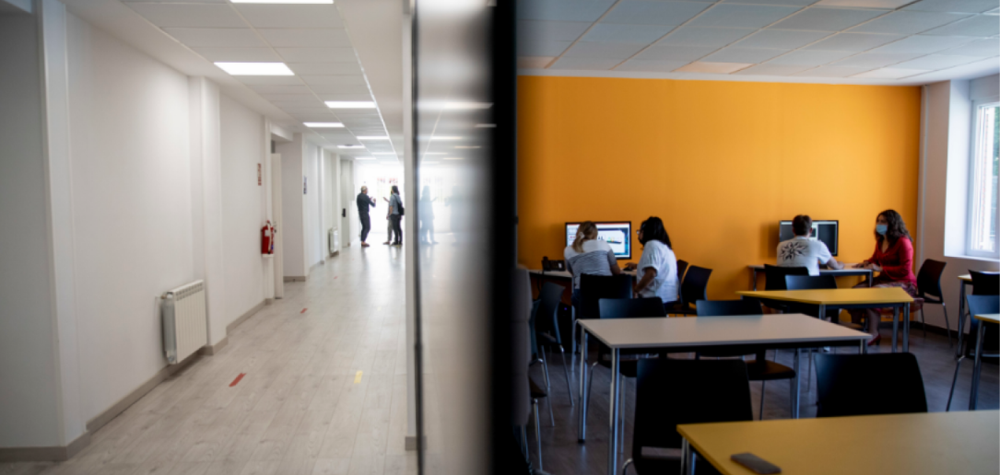

El IES Tetuán de las Victorias se ubica en la Calle Vía Límite, 14 (28029, Madrid), dentro del distrito de Tetuán, al norte de la capital. Se encuentra en una zona residencial de muy fácil acceso, situada a pocos minutos a pie de la estación de metro de La Ventilla (Línea 9) y bien comunicada por varias líneas de autobús urbano como la 42 y la 147.

El IES Tetuán de las Victorias es un centro público de referencia enfocado en ofrecer una enseñanza de calidad, práctica y orientada al empleo real. Su objetivo principal es guiar al alumnado hacia su futuro profesional, adaptándose a las necesidades actuales del mercado de trabajo a través de una sólida oferta en Formación Profesional.
El centro cuenta con un itinerario formativo completo que se adapta a diferentes perfiles y
necesidades:

En el IES Tetuán de las Victorias contamos con un entorno de aprendizaje moderno y bien equipado, diseñado para ofrecer una experiencia educativa práctica, cómoda e integral. Nuestras instalaciones y servicios están estructurados para facilitar tanto el desarrollo técnico en el aula como el crecimiento personal y académico del alumnado durante todo su proceso formativo.

